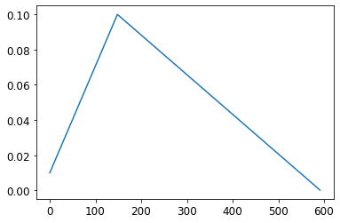

Notes on fastai Book Ch. 19
#hide
!pip install -Uqq fastbook
import fastbook
fastbook.setup_book()#hide
from fastbook import *import inspect
def print_source(obj):
for line in inspect.getsource(obj).split("\n"):
print(line)A fastai Learner from Scratch
Data
print_source(untar_data) def untar_data(url, archive=None, data=None, c_key='data', force_download=False):#, extract_func=file_extract, timeout=4):
"Download `url` to `fname` if `dest` doesn't exist, and extract to folder `dest`"
d = FastDownload(fastai_cfg(), module=fastai.data, archive=archive, data=data, base='~/.fastai')
return d.get(url, force=force_download, extract_key=c_key)print_source(fastai_cfg) @lru_cache(maxsize=None)
def fastai_cfg():
"`Config` object for fastai's `config.ini`"
return Config(Path(os.getenv('FASTAI_HOME', '~/.fastai')), 'config.ini', create=dict(
data = 'data', archive = 'archive', storage = 'tmp', model = 'models'))fastdownload library
- Documentation
- easily download, verify, and extract archives
from fastdownload import FastDownloadprint_source(FastDownload) class FastDownload:
def __init__(self, cfg=None, base='~/.fastdownload', archive=None, data=None, module=None):
base = Path(base).expanduser().absolute()
default = {'data':(data or 'data'), 'archive':(archive or 'archive')}
self.cfg = Config(base, 'config.ini', create=default) if cfg is None else cfg
self.module = checks_module(module)
if data is not None: self.cfg['data'] = data
if archive is not None: self.cfg['archive'] = archive
def arch_path(self):
"Path to archives"
return self.cfg.path('archive')
def data_path(self, extract_key='data', arch=None):
"Path to extracted data"
path = self.cfg.path(extract_key)
return path if arch is None else path/remove_suffix(arch.stem, '.tar')
def check(self, url, fpath):
"Check whether size and hash of `fpath` matches stored data for `url` or data is missing"
checks = read_checks(self.module).get(url)
return not checks or path_stats(fpath)==checks
def download(self, url, force=False):
"Download `url` to archive path, unless exists and `self.check` fails and not `force`"
self.arch_path().mkdir(exist_ok=True, parents=True)
return download_and_check(url, urldest(url, self.arch_path()), self.module, force)
def rm(self, url, rm_arch=True, rm_data=True, extract_key='data'):
"Delete downloaded archive and extracted data for `url`"
arch = urldest(url, self.arch_path())
if rm_arch: arch.delete()
if rm_data: self.data_path(extract_key, arch).delete()
def update(self, url):
"Store the hash and size in `download_checks.py`"
update_checks(urldest(url, self.arch_path()), url, self.module)
def extract(self, url, extract_key='data', force=False):
"Extract archive already downloaded from `url`, overwriting existing if `force`"
arch = urldest(url, self.arch_path())
if not arch.exists(): raise Exception(f'{arch} does not exist')
dest = self.data_path(extract_key)
dest.mkdir(exist_ok=True, parents=True)
return untar_dir(arch, dest, rename=True, overwrite=force)
def get(self, url, extract_key='data', force=False):
"Download and extract `url`, overwriting existing if `force`"
if not force:
data = self.data_path(extract_key, urldest(url, self.arch_path()))
if data.exists(): return data
self.download(url, force=force)
return self.extract(url, extract_key=extract_key, force=force)import fastdownloadprint_source(fastdownload.download_and_check) def download_and_check(url, fpath, fmod, force):
"Download `url` to `fpath`, unless exists and `check` fails and not `force`"
if not force and fpath.exists():
if check(fmod, url, fpath): return fpath
else: print("Downloading a new version of this dataset...")
res = download_url(url, fpath)
if not check(fmod, url, fpath): raise Exception("Downloaded file is corrupt or not latest version")
return res
print_source(fastdownload.download_url) def download_url(url, dest=None, timeout=None, show_progress=True):
"Download `url` to `dest` and show progress"
pbar = progress_bar([])
def progress(count=1, bsize=1, tsize=None):
pbar.total = tsize
pbar.update(count*bsize)
return urlsave(url, dest, reporthook=progress if show_progress else None, timeout=timeout)urlsave <function fastcore.net.urlsave(url, dest=None, reporthook=None, timeout=None)>print_source(urlsave) def urlsave(url, dest=None, reporthook=None, timeout=None):
"Retrieve `url` and save based on its name"
dest = urldest(url, dest)
dest.parent.mkdir(parents=True, exist_ok=True)
nm,msg = urlretrieve(url, dest, reporthook, timeout=timeout)
return nmurlretrieve <function fastcore.net.urlretrieve(url, filename=None, reporthook=None, data=None, timeout=None)>print_source(urlretrieve) def urlretrieve(url, filename=None, reporthook=None, data=None, timeout=None):
"Same as `urllib.request.urlretrieve` but also works with `Request` objects"
with contextlib.closing(urlopen(url, data, timeout=timeout)) as fp:
headers = fp.info()
if filename: tfp = open(filename, 'wb')
else:
tfp = tempfile.NamedTemporaryFile(delete=False)
filename = tfp.name
with tfp:
bs,size,read,blocknum = 1024*8,-1,0,0
if "content-length" in headers: size = int(headers["Content-Length"])
if reporthook: reporthook(blocknum, bs, size)
while True:
block = fp.read(bs)
if not block: break
read += len(block)
tfp.write(block)
blocknum += 1
if reporthook: reporthook(blocknum, bs, size)
if size >= 0 and read < size:
raise ContentTooShortError(f"retrieval incomplete: got only {read} out of {size} bytes", headers)
return filename,headersimport contextlibprint_source(contextlib.closing) class closing(AbstractContextManager):
"""Context to automatically close something at the end of a block.
Code like this:
with closing(<module>.open(<arguments>)) as f:
<block>
is equivalent to this:
f = <module>.open(<arguments>)
try:
<block>
finally:
f.close()
"""
def __init__(self, thing):
self.thing = thing
def __enter__(self):
return self.thing
def __exit__(self, *exc_info):
self.thing.close()path = untar_data(URLs.IMAGENETTE_160)
path Path('/home/innom-dt/.fastai/data/imagenette2-160')t = get_image_files(path)
t[0] Path('/home/innom-dt/.fastai/data/imagenette2-160/val/n03028079/n03028079_2470.JPEG')print_source(get_image_files) def get_image_files(path, recurse=True, folders=None):
"Get image files in `path` recursively, only in `folders`, if specified."
return get_files(path, extensions=image_extensions, recurse=recurse, folders=folders)image_extensions {'.art',
'.bmp',
'.cdr',
'.cdt',
'.cpt',
'.cr2',
'.crw',
'.djv',
'.djvu',
'.erf',
'.gif',
'.ico',
'.ief',
'.jng',
'.jp2',
'.jpe',
'.jpeg',
'.jpf',
'.jpg',
'.jpg2',
'.jpm',
'.jpx',
'.nef',
'.orf',
'.pat',
'.pbm',
'.pcx',
'.pgm',
'.png',
'.pnm',
'.ppm',
'.psd',
'.ras',
'.rgb',
'.svg',
'.svgz',
'.tif',
'.tiff',
'.wbmp',
'.xbm',
'.xpm',
'.xwd'}print_source(get_files) def get_files(path, extensions=None, recurse=True, folders=None, followlinks=True):
"Get all the files in `path` with optional `extensions`, optionally with `recurse`, only in `folders`, if specified."
path = Path(path)
folders=L(folders)
extensions = setify(extensions)
extensions = {e.lower() for e in extensions}
if recurse:
res = []
for i,(p,d,f) in enumerate(os.walk(path, followlinks=followlinks)): # returns (dirpath, dirnames, filenames)
if len(folders) !=0 and i==0: d[:] = [o for o in d if o in folders]
else: d[:] = [o for o in d if not o.startswith('.')]
if len(folders) !=0 and i==0 and '.' not in folders: continue
res += _get_files(p, f, extensions)
else:
f = [o.name for o in os.scandir(path) if o.is_file()]
res = _get_files(path, f, extensions)
return L(res)help(os.walk) Help on function walk in module os:
walk(top, topdown=True, onerror=None, followlinks=False)
Directory tree generator.
For each directory in the directory tree rooted at top (including top
itself, but excluding '.' and '..'), yields a 3-tuple
dirpath, dirnames, filenames
dirpath is a string, the path to the directory. dirnames is a list of
the names of the subdirectories in dirpath (excluding '.' and '..').
filenames is a list of the names of the non-directory files in dirpath.
Note that the names in the lists are just names, with no path components.
To get a full path (which begins with top) to a file or directory in
dirpath, do os.path.join(dirpath, name).
If optional arg 'topdown' is true or not specified, the triple for a
directory is generated before the triples for any of its subdirectories
(directories are generated top down). If topdown is false, the triple
for a directory is generated after the triples for all of its
subdirectories (directories are generated bottom up).
When topdown is true, the caller can modify the dirnames list in-place
(e.g., via del or slice assignment), and walk will only recurse into the
subdirectories whose names remain in dirnames; this can be used to prune the
search, or to impose a specific order of visiting. Modifying dirnames when
topdown is false has no effect on the behavior of os.walk(), since the
directories in dirnames have already been generated by the time dirnames
itself is generated. No matter the value of topdown, the list of
subdirectories is retrieved before the tuples for the directory and its
subdirectories are generated.
By default errors from the os.scandir() call are ignored. If
optional arg 'onerror' is specified, it should be a function; it
will be called with one argument, an OSError instance. It can
report the error to continue with the walk, or raise the exception
to abort the walk. Note that the filename is available as the
filename attribute of the exception object.
By default, os.walk does not follow symbolic links to subdirectories on
systems that support them. In order to get this functionality, set the
optional argument 'followlinks' to true.
Caution: if you pass a relative pathname for top, don't change the
current working directory between resumptions of walk. walk never
changes the current directory, and assumes that the client doesn't
either.
Example:
import os
from os.path import join, getsize
for root, dirs, files in os.walk('python/Lib/email'):
print(root, "consumes", end="")
print(sum(getsize(join(root, name)) for name in files), end="")
print("bytes in", len(files), "non-directory files")
if 'CVS' in dirs:
dirs.remove('CVS') # don't visit CVS directoriesNote: os.walk() is faster than glob.
setify <function fastcore.basics.setify(o)>print_source(setify) def setify(o):
"Turn any list like-object into a set."
return o if isinstance(o,set) else set(listify(o))from glob import globhelp(glob) Help on function glob in module glob:
glob(pathname, *, recursive=False)
Return a list of paths matching a pathname pattern.
The pattern may contain simple shell-style wildcards a la
fnmatch. However, unlike fnmatch, filenames starting with a
dot are special cases that are not matched by '*' and '?'
patterns.
If recursive is true, the pattern '**' will match any files and
zero or more directories and subdirectories.files = L(glob(f'{path}/**/*.JPEG', recursive=True)).map(Path)
files[0] Path('/home/innom-dt/.fastai/data/imagenette2-160/val/n03028079/n03028079_2470.JPEG')im = Image.open(files[0])
imhelp(Image.open) Help on function open in module PIL.Image:
open(fp, mode='r', formats=None)
Opens and identifies the given image file.
This is a lazy operation; this function identifies the file, but
the file remains open and the actual image data is not read from
the file until you try to process the data (or call the
:py:meth:`~PIL.Image.Image.load` method). See
:py:func:`~PIL.Image.new`. See :ref:`file-handling`.
:param fp: A filename (string), pathlib.Path object or a file object.
The file object must implement ``file.read``,
``file.seek``, and ``file.tell`` methods,
and be opened in binary mode.
:param mode: The mode. If given, this argument must be "r".
:param formats: A list or tuple of formats to attempt to load the file in.
This can be used to restrict the set of formats checked.
Pass ``None`` to try all supported formats. You can print the set of
available formats by running ``python3 -m PIL`` or using
the :py:func:`PIL.features.pilinfo` function.
:returns: An :py:class:`~PIL.Image.Image` object.
:exception FileNotFoundError: If the file cannot be found.
:exception PIL.UnidentifiedImageError: If the image cannot be opened and
identified.
:exception ValueError: If the ``mode`` is not "r", or if a ``StringIO``
instance is used for ``fp``.
:exception TypeError: If ``formats`` is not ``None``, a list or a tuple.im_t = tensor(im)
im_t.shape torch.Size([213, 160, 3])help(Path.parent) Help on property:
The logical parent of the path.lbls = files.map(Self.parent.name()).unique(); lbls (#10) ['n03028079','n03445777','n03417042','n02102040','n03425413','n03000684','n01440764','n03394916','n03888257','n02979186']!ls $path/'train' n01440764 n02979186 n03028079 n03417042 n03445777
n02102040 n03000684 n03394916 n03425413 n03888257val2idx <function fastcore.basics.val2idx(x)>print_source(val2idx) def val2idx(x):
"Dict from value to index"
return {v:k for k,v in enumerate(x)}v2i = lbls.val2idx(); v2i {'n03028079': 0,
'n03445777': 1,
'n03417042': 2,
'n02102040': 3,
'n03425413': 4,
'n03000684': 5,
'n01440764': 6,
'n03394916': 7,
'n03888257': 8,
'n02979186': 9}Dataset
# Define a dataset that returns tuples of inputs and targets from a list filenames
class Dataset:
def __init__(self, fns): self.fns=fns
def __len__(self): return len(self.fns)
def __getitem__(self, i):
im = Image.open(self.fns[i]).resize((64,64)).convert('RGB')
# the index mapping for the target value
y = v2i[self.fns[i].parent.name]
# scale the input image to the range [0,1]
return tensor(im).float()/255, tensor(y)Note: __getitem__ lets you index using the [] syntax.
train_filt = L(o.parent.parent.name=='train' for o in files)train_filt (#13394) [False,False,False,False,False,False,False,False,False,False...]~train_filt (#13394) [True,True,True,True,True,True,True,True,True,True...]Note: __invert__: Return the bitwise inverse of the number obj. This is equivalent to ~obj.
print_source(L.__invert__) def __invert__(self): return self._new(not i for i in self)print_source(L._new) def _new(self, items, *args, **kwargs): return type(self)(items, *args, use_list=None, **kwargs)train,valid = files[train_filt],files[~train_filt]
len(train),len(valid) (9469, 3925)train_ds,valid_ds = Dataset(train),Dataset(valid)
x,y = train_ds[0]
x.shape,y (torch.Size([64, 64, 3]), tensor(0))show_image(x, title=lbls[y]);show_image <function fastai.torch_core.show_image(im, ax=None, figsize=None, title=None, ctx=None, cmap=None, norm=None, aspect=None, interpolation=None, alpha=None, vmin=None, vmax=None, origin=None, extent=None, *, filternorm=True, filterrad=4.0, resample=None, url=None, data=None, **kwargs)>print_source(show_image) @delegates(plt.Axes.imshow, keep=True, but=['shape', 'imlim'])
def show_image(im, ax=None, figsize=None, title=None, ctx=None, **kwargs):
"Show a PIL or PyTorch image on `ax`."
# Handle pytorch axis order
if hasattrs(im, ('data','cpu','permute')):
im = im.data.cpu()
if im.shape[0]<5: im=im.permute(1,2,0)
elif not isinstance(im,np.ndarray): im=array(im)
# Handle 1-channel images
if im.shape[-1]==1: im=im[...,0]
ax = ifnone(ax,ctx)
if figsize is None: figsize = (_fig_bounds(im.shape[0]), _fig_bounds(im.shape[1]))
if ax is None: _,ax = plt.subplots(figsize=figsize)
ax.imshow(im, **kwargs)
if title is not None: ax.set_title(title)
ax.axis('off')
return ax# Define a function to stack individual tuples of independent and dependent variables
# into a mini-batch
def collate(idxs, ds):
xb,yb = zip(*[ds[i] for i in idxs])
return torch.stack(xb),torch.stack(yb)help(torch.stack) Help on built-in function stack:
stack(...)
stack(tensors, dim=0, *, out=None) -> Tensor
Concatenates a sequence of tensors along a new dimension.
All tensors need to be of the same size.
Arguments:
tensors (sequence of Tensors): sequence of tensors to concatenate
dim (int): dimension to insert. Has to be between 0 and the number
of dimensions of concatenated tensors (inclusive)
Keyword args:
out (Tensor, optional): the output tensor.# Create a mini-batch with a batch size of 2
x,y = collate([1,2], train_ds)
x.shape,y (torch.Size([2, 64, 64, 3]), tensor([0, 0]))class DataLoader:
def __init__(self, ds, bs=128, shuffle=False, n_workers=1):
self.ds,self.bs,self.shuffle,self.n_workers = ds,bs,shuffle,n_workers
def __len__(self): return (len(self.ds)-1)//self.bs+1
def __iter__(self):
idxs = L.range(self.ds)
if self.shuffle: idxs = idxs.shuffle()
chunks = [idxs[n:n+self.bs] for n in range(0, len(self.ds), self.bs)]
with ProcessPoolExecutor(self.n_workers) as ex:
yield from ex.map(collate, chunks, ds=self.ds)ProcessPoolExecutor fastcore.parallel.ProcessPoolExecutorprint_source(ProcessPoolExecutor) class ProcessPoolExecutor(concurrent.futures.ProcessPoolExecutor):
"Same as Python's ProcessPoolExecutor, except can pass `max_workers==0` for serial execution"
def __init__(self, max_workers=defaults.cpus, on_exc=print, pause=0, **kwargs):
if max_workers is None: max_workers=defaults.cpus
store_attr()
self.not_parallel = max_workers==0
if self.not_parallel: max_workers=1
super().__init__(max_workers, **kwargs)
def map(self, f, items, *args, timeout=None, chunksize=1, **kwargs):
if not parallelable('max_workers', self.max_workers, f): self.max_workers = 0
self.not_parallel = self.max_workers==0
if self.not_parallel: self.max_workers=1
if self.not_parallel == False: self.lock = Manager().Lock()
g = partial(f, *args, **kwargs)
if self.not_parallel: return map(g, items)
_g = partial(_call, self.lock, self.pause, self.max_workers, g)
try: return super().map(_g, items, timeout=timeout, chunksize=chunksize)
except Exception as e: self.on_exc(e)print_source(parallelable) def parallelable(param_name, num_workers, f=None):
f_in_main = f == None or sys.modules[f.__module__].__name__ == "__main__"
if sys.platform == "win32" and IN_NOTEBOOK and num_workers > 0 and f_in_main:
print("Due to IPython and Windows limitation, python multiprocessing isn't available now.")
print(f"So `{param_name}` has to be changed to 0 to avoid getting stuck")
return False
return TruePython ProcessPoolExecutor
- Documentaion
- executes calls asynchronously using a pool of processes
Note: A parallel data loader is critical because opening and decompressing a JPEG image is slow.
defaults namespace(cpus=16,
use_cuda=None,
activation=torch.nn.modules.activation.ReLU,
callbacks=[fastai.callback.core.TrainEvalCallback,
fastai.learner.Recorder,
fastai.callback.progress.ProgressCallback],
lr=0.001)# Only use 16 workers at most
n_workers = min(16, defaults.cpus)
train_dl = DataLoader(train_ds, bs=128, shuffle=True, n_workers=n_workers)
valid_dl = DataLoader(valid_ds, bs=256, shuffle=False, n_workers=n_workers)
xb,yb = first(train_dl)
xb.shape,yb.shape,len(train_dl) (torch.Size([128, 64, 64, 3]), torch.Size([128]), 74)Note: This dataloader is nearly as fast as the one provided by PyTorch.
# Calculate the mean and standard deviation for the mini-batch
stats = [xb.mean((0,1,2)),xb.std((0,1,2))]
stats [tensor([0.4697, 0.4648, 0.4382]), tensor([0.2758, 0.2752, 0.2963])]# Define a class to store and apply the mean and standard deviation for the data
class Normalize:
def __init__(self, stats): self.stats=stats
def __call__(self, x):
if x.device != self.stats[0].device:
self.stats = to_device(self.stats, x.device)
return (x-self.stats[0])/self.stats[1]norm = Normalize(stats)
# Normalize the input and swap convert from HWC to CHW
def tfm_x(x): return norm(x).permute((0,3,1,2))Recall: PIL uses HWC axis order for images while PyTorch uses NCHW axis order.
t = tfm_x(x)
t.mean((0,2,3)),t.std((0,2,3)) (tensor([-0.1890, -0.2993, -0.4721]), tensor([0.6051, 0.5759, 0.7124]))Module and Parameter
# The parameter class just sets requires_grad_ to True for its tensor
class Parameter(Tensor):
def __new__(self, x): return Tensor._make_subclass(Parameter, x, True)
def __init__(self, *args, **kwargs): self.requires_grad_()Note: __new__: Called to create a new instance of class cls. * Called before __init__
Parameter(tensor(3.)) tensor(3., requires_grad=True)class Module:
def __init__(self):
self.hook,self.params,self.children,self._training = None,[],[],False
def register_parameters(self, *ps): self.params += ps
def register_modules (self, *ms): self.children += ms
@property
def training(self): return self._training
@training.setter
def training(self,v):
self._training = v
for m in self.children: m.training=v
def parameters(self):
# Get parameters for the Module and any child Modules recursively
return self.params + sum([m.parameters() for m in self.children], [])
# Called anytime Python sets an attribute for the class
def __setattr__(self,k,v):
super().__setattr__(k,v)
# Check if the new value is a Parameter
if isinstance(v,Parameter): self.register_parameters(v)
# Check if the new value is a Module
if isinstance(v,Module): self.register_modules(v)
def __call__(self, *args, **kwargs):
# The forward method needs to be implemented by a subclass
res = self.forward(*args, **kwargs)
# Call any attached hooks after the forward pass
if self.hook is not None: self.hook(res, args)
return res
def cuda(self):
# Move all parameters to the GPU
for p in self.parameters(): p.data = p.data.cuda()sum([[4],[5],[6]],[1,2,3]) [1, 2, 3, 4, 5, 6]# Inherit from the custom Module class
class ConvLayer(Module):
def __init__(self, ni, nf, stride=1, bias=True, act=True):
super().__init__()
self.w = Parameter(torch.zeros(nf,ni,3,3))
self.b = Parameter(torch.zeros(nf)) if bias else None
self.act,self.stride = act,stride
init = nn.init.kaiming_normal_ if act else nn.init.xavier_normal_
init(self.w)
# Implement the forward function
def forward(self, x):
x = F.conv2d(x, self.w, self.b, stride=self.stride, padding=1)
if self.act: x = F.relu(x)
return x# A single 3-channel 28x28 image
inp = torch.randn(1, 3, 28, 28)
# A single 3x3 convolutional kernel for a 3-channel image
w = torch.randn(1, 3, 3, 3)# Extracts sliding local blocks
inp_unf = torch.nn.functional.unfold(inp, (3, 3))
inp_unf.shape torch.Size([1, 27, 676])Note: No padding and a stride of \(1\) so we go from \(28x28\) to \(26x26\) (\(26x26=676\)).
inp[0][0][0][:9] tensor([ 1.9269, 1.4873, 0.9007, -2.1055, 0.6784, -1.2345, -0.0431, -1.6047, -0.7521])inp_unf[0][0][:9] tensor([ 1.9269, 1.4873, 0.9007, -2.1055, 0.6784, -1.2345, -0.0431, -1.6047, -0.7521])inp[0][0][1][:9] tensor([-0.2316, 0.0418, -0.2516, 0.8599, -1.3847, -0.8712, -0.2234, 1.7174, 0.3189])inp_unf[0][3][:9] tensor([-0.2316, 0.0418, -0.2516, 0.8599, -1.3847, -0.8712, -0.2234, 1.7174, 0.3189])inp_unf.transpose(1, 2).shape torch.Size([1, 676, 27])w.view(w.size(0), -1).t().shape torch.Size([27, 1])out_unf = inp_unf.transpose(1, 2).matmul(w.view(w.size(0), -1).t()).transpose(1, 2)
out_unf.shape torch.Size([1, 1, 676])out_unf.view(1,1,inp.shape[2]-2,inp.shape[3]-2)[0][0][0] tensor([ 2.1036, 3.9867, -11.0306, -4.8908, -5.1374, 0.4219, 6.1278, -1.9733, 4.0213, 0.3114, -8.5303, 5.3541, 6.5859, -4.0149, 4.5094, -5.4661, 2.4601, -4.3120, 1.3568,
-1.8379, 0.1750, -1.6839, 4.5438, -1.2521, -1.9825, -4.2498])torch.nn.functional.conv2d(inp, w).shape, torch.nn.functional.conv2d(inp, w)[0][0][0] (torch.Size([1, 1, 26, 26]),
tensor([ 2.1036, 3.9867, -11.0306, -4.8908, -5.1374, 0.4219, 6.1278, -1.9733, 4.0213, 0.3114, -8.5303, 5.3541, 6.5859, -4.0149, 4.5094, -5.4661, 2.4601, -4.3120, 1.3568,
-1.8379, 0.1750, -1.6839, 4.5438, -1.2521, -1.9825, -4.2498]))l = ConvLayer(3, 4)
len(l.parameters()) 2xbt = tfm_x(xb)
r = l(xbt)
r.shape torch.Size([128, 4, 64, 64])class Linear(Module):
def __init__(self, ni, nf):
super().__init__()
self.w = Parameter(torch.zeros(nf,ni))
self.b = Parameter(torch.zeros(nf))
nn.init.xavier_normal_(self.w)
def forward(self, x): return x@self.w.t() + self.bl = Linear(4,2)
r = l(torch.ones(3,4))
r.shape torch.Size([3, 2])# A test class to confirm that mu;tiple parameters are properly registered
class T(Module):
def __init__(self):
super().__init__()
self.c,self.l = ConvLayer(3,4),Linear(4,2)t = T()
len(t.parameters()) 4Note: A weight and bias parameter for both of the layers should add up to for total parameters.
# Verify the cuda() method moves all the parameters to the GPU
t.cuda()
# Check the device for the linear layer weights parameter
t.l.w.device device(type='cuda', index=0)Simple CNN
class Sequential(Module):
def __init__(self, *layers):
super().__init__()
self.layers = layers
# A Sequential Module will contain a list of other Modules
self.register_modules(*layers)
# Call each layer in sequential order
def forward(self, x):
for l in self.layers: x = l(x)
return xclass AdaptivePool(Module):
# Pool input values to a 1x1 output
def forward(self, x): return x.mean((2,3))def simple_cnn():
return Sequential(
ConvLayer(3 ,16 ,stride=2), #32
ConvLayer(16,32 ,stride=2), #16
ConvLayer(32,64 ,stride=2), # 8
ConvLayer(64,128,stride=2), # 4
AdaptivePool(),
Linear(128, 10)
)m = simple_cnn()
len(m.parameters()) 10Note: Five layers each with a weights parameter and a bias parameter. (plus a pooling layer)
# Add a hook to print the mean and standard deviation of the activations for each ConvLayer
def print_stats(outp, inp): print (outp.mean().item(),outp.std().item())
for i in range(4): m.layers[i].hook = print_stats
r = m(xbt)
r.shape 0.5312516689300537 0.9105479121208191
0.4804598093032837 0.872667133808136
0.4145401120185852 0.7496744990348816
0.440979540348053 0.7261776924133301
torch.Size([128, 10])Loss
def nll(input, target): return -input[range(target.shape[0]), target].mean()def log_softmax(x): return x - x.exp().sum(-1,keepdim=True).log()
sm = log_softmax(r); sm[0][0] tensor(-2.5062, grad_fn=<AliasBackward0>)loss = nll(sm, yb)
loss tensor(2.6062, grad_fn=<AliasBackward0>)x = torch.rand(5)
a = x.max()
x.exp().sum().log() == a + (x-a).exp().sum().log() tensor(False)LogSumExp Trick
- Explanation
- a more stable way (for computers) to compute the log of the sum of exponentials \[\log{\left( \sum^{n}_{j=1}{e^{x_{j}}} \right)} = \log{\left(e^{a} \sum^{n}_{j=1}{e^{x_{j}-a}} \right)} = a + \log{\left(\sum^{n}_{j=1}{e^{x_{j}-a}} \right)}\]
- where \(a\) is the maximum of \(x_{j}\)
x = torch.rand(5)
a = x.max()
x.exp().sum().log() == a + (x-a).exp().sum().log() tensor(True)def logsumexp(x):
m = x.max(-1)[0]
return m + (x-m[:,None]).exp().sum(-1).log()
logsumexp(r)[0] tensor(2.6922, grad_fn=<AliasBackward0>)def log_softmax(x): return x - x.logsumexp(-1,keepdim=True)sm = log_softmax(r); sm[0][0] tensor(-2.5062, grad_fn=<AliasBackward0>)def cross_entropy(preds, yb): return nll(log_softmax(preds), yb).mean()Learner
class SGD:
def __init__(self, params, lr, wd=0.): store_attr()
def step(self):
for p in self.params:
# SGD plus weight decay
p.data -= (p.grad.data + p.data*self.wd) * self.lr
p.grad.data.zero_()print_source(store_attr) def store_attr(names=None, self=None, but='', cast=False, store_args=None, **attrs):
"Store params named in comma-separated `names` from calling context into attrs in `self`"
fr = sys._getframe(1)
args = argnames(fr, True)
if self: args = ('self', *args)
else: self = fr.f_locals[args[0]]
if store_args is None: store_args = not hasattr(self,'__slots__')
if store_args and not hasattr(self, '__stored_args__'): self.__stored_args__ = {}
anno = annotations(self) if cast else {}
if names and isinstance(names,str): names = re.split(', *', names)
ns = names if names is not None else getattr(self, '__slots__', args[1:])
added = {n:fr.f_locals[n] for n in ns}
attrs = {**attrs, **added}
if isinstance(but,str): but = re.split(', *', but)
attrs = {k:v for k,v in attrs.items() if k not in but}
return _store_attr(self, anno, **attrs)help(sys._getframe) Help on built-in function _getframe in module sys:
_getframe(depth=0, /)
Return a frame object from the call stack.
If optional integer depth is given, return the frame object that many
calls below the top of the stack. If that is deeper than the call
stack, ValueError is raised. The default for depth is zero, returning
the frame at the top of the call stack.
This function should be used for internal and specialized purposes
only.print_source(argnames) def argnames(f, frame=False):
"Names of arguments to function or frame `f`"
code = getattr(f, 'f_code' if frame else '__code__')
return code.co_varnames[:code.co_argcount+code.co_kwonlyargcount]print_source(annotations) def annotations(o):
"Annotations for `o`, or `type(o)`"
res = {}
if not o: return res
res = type_hints(o)
if not res: res = type_hints(getattr(o,'__init__',None))
if not res: res = type_hints(type(o))
return res# A class that just stores the training and validation datasets
class DataLoaders:
def __init__(self, *dls): self.train,self.valid = dls
dls = DataLoaders(train_dl,valid_dl)class Learner:
def __init__(self, model, dls, loss_func, lr, cbs, opt_func=SGD):
store_attr()
# Let each callback know what Learner it is being used in
for cb in cbs: cb.learner = self
def one_batch(self):
# Call the before_batch callback
self('before_batch')
xb,yb = self.batch
self.preds = self.model(xb)
self.loss = self.loss_func(self.preds, yb)
if self.model.training:
self.loss.backward()
self.opt.step()
# Call the after_batch callback
self('after_batch')
def one_epoch(self, train):
self.model.training = train
# Call the before_epoch callback
self('before_epoch')
# Select dataset based on whether we are in training or validation mode
dl = self.dls.train if train else self.dls.valid
# Iterate through the current dataset one batch at a time
for self.num,self.batch in enumerate(progress_bar(dl, leave=False)):
self.one_batch()
# Call the after_epoch callback
self('after_epoch')
def fit(self, n_epochs):
# Call the before_fit callback
self('before_fit')
self.opt = self.opt_func(self.model.parameters(), self.lr)
self.n_epochs = n_epochs
try:
for self.epoch in range(n_epochs):
# Complete a full pass through the training dataset
self.one_epoch(True)
# Complete a full pass through the validation dataset
self.one_epoch(False)
except CancelFitException: pass
# Call the after_fit callback
self('after_fit')
def __call__(self,name):
for cb in self.cbs: getattr(cb,name,noop)()Callbacks
# Automatically pass requests to change attributes that don't exist to the `_default`
class Callback(GetAttr): _default='learner'GetAttr fastcore.basics.GetAttrprint_source(GetAttr) class GetAttr:
"Inherit from this to have all attr accesses in `self._xtra` passed down to `self.default`"
_default='default'
def _component_attr_filter(self,k):
if k.startswith('__') or k in ('_xtra',self._default): return False
xtra = getattr(self,'_xtra',None)
return xtra is None or k in xtra
def _dir(self): return [k for k in dir(getattr(self,self._default)) if self._component_attr_filter(k)]
def __getattr__(self,k):
if self._component_attr_filter(k):
attr = getattr(self,self._default,None)
if attr is not None: return getattr(attr,k)
raise AttributeError(k)
def __dir__(self): return custom_dir(self,self._dir())
# def __getstate__(self): return self.__dict__
def __setstate__(self,data): self.__dict__.update(data)help(getattr) Help on built-in function getattr in module builtins:
getattr(...)
getattr(object, name[, default]) -> value
Get a named attribute from an object; getattr(x, 'y') is equivalent to x.y.
When a default argument is given, it is returned when the attribute doesn't
exist; without it, an exception is raised in that case.Note: __dir__: Called when dir() is called on an object
dir(Callback) ['__class__',
'__delattr__',
'__dict__',
'__dir__',
'__doc__',
'__eq__',
'__format__',
'__ge__',
'__getattr__',
'__getattribute__',
'__gt__',
'__hash__',
'__init__',
'__init_subclass__',
'__le__',
'__lt__',
'__module__',
'__ne__',
'__new__',
'__reduce__',
'__reduce_ex__',
'__repr__',
'__setattr__',
'__setstate__',
'__sizeof__',
'__str__',
'__subclasshook__',
'__weakref__',
'_component_attr_filter',
'_default',
'_dir']# A callback that moves all model parameters to the GPU at the start of the Learner.fit() method
class SetupLearnerCB(Callback):
def before_batch(self):
xb,yb = to_device(self.batch)
self.learner.batch = tfm_x(xb),yb
def before_fit(self): self.model.cuda()# A callback to track training progress
class TrackResults(Callback):
def before_epoch(self): self.accs,self.losses,self.ns = [],[],[]
def after_epoch(self):
n = sum(self.ns)
print(self.epoch, self.model.training,
sum(self.losses).item()/n, sum(self.accs).item()/n)
def after_batch(self):
xb,yb = self.batch
acc = (self.preds.argmax(dim=1)==yb).float().sum()
self.accs.append(acc)
n = len(xb)
self.losses.append(self.loss*n)
self.ns.append(n)# Test the learner
cbs = [SetupLearnerCB(),TrackResults()]
learn = Learner(simple_cnn(), dls, cross_entropy, lr=0.1, cbs=cbs)
learn.model <__main__.Sequential at 0x7f15bd1d2bb0>learn.cbs [<__main__.SetupLearnerCB at 0x7f15bfee94c0>,
<__main__.TrackResults at 0x7f15bfee9430>]learn.cbs[0].model <__main__.Sequential at 0x7f15bd1d2bb0>learn.fit(1) 0 True 2.124386154820995 0.23592776428345127
0 False 2.206350766321656 0.2140127388535032Scheduling the Learning Rate
class LRFinder(Callback):
def before_fit(self):
self.losses,self.lrs = [],[]
self.learner.lr = 1e-6
def before_batch(self):
if not self.model.training: return
self.opt.lr *= 1.2
def after_batch(self):
if not self.model.training: return
if self.opt.lr>10 or torch.isnan(self.loss): raise CancelFitException
self.losses.append(self.loss.item())
self.lrs.append(self.opt.lr)lrfind = LRFinder()
learn = Learner(simple_cnn(), dls, cross_entropy, lr=0.1, cbs=cbs+[lrfind])
learn.fit(2) 0 True 2.3831190100591404 0.12894709050586123
0 False 3.06156648089172 0.0889171974522293plt.plot(lrfind.lrs[:-2],lrfind.losses[:-2])
plt.xscale('log')
class OneCycle(Callback):
def __init__(self, base_lr): self.base_lr = base_lr
def before_fit(self): self.lrs = []
def before_batch(self):
if not self.model.training: return
n = len(self.dls.train)
bn = self.epoch*n + self.num
mn = self.n_epochs*n
pct = bn/mn
pct_start,div_start = 0.25,10
if pct<pct_start:
pct /= pct_start
lr = (1-pct)*self.base_lr/div_start + pct*self.base_lr
else:
pct = (pct-pct_start)/(1-pct_start)
lr = (1-pct)*self.base_lr
self.opt.lr = lr
self.lrs.append(lr)onecyc = OneCycle(0.1)
learn = Learner(simple_cnn(), dls, cross_entropy, lr=0.1, cbs=cbs+[onecyc])learn.fit(8)
0 True 2.260071103733235 0.1608406378709473
0 False 2.204750696656051 0.22038216560509555
1 True 2.0790218410074983 0.25873904319357904
1 False 2.020204518312102 0.267515923566879
2 True 1.9341191074163058 0.32041398246910974
2 False 1.837548765923567 0.36178343949044584
3 True 1.8241042728244798 0.3763861020171085
3 False 1.780602980692675 0.381656050955414
4 True 1.7337240270883938 0.403210476291055
4 False 1.7259341411226115 0.41095541401273883
5 True 1.6540151167625938 0.4310909282923223
5 False 1.6680330662818472 0.41859872611464966
6 True 1.5874014671229804 0.4634069067483367
6 False 1.6006179090366242 0.4601273885350318
7 True 1.5361670525200655 0.4771359172035062
7 False 1.5802234275477707 0.4682802547770701plt.plot(onecyc.lrs);
References
Previous: Notes on fastai Book Ch. 18